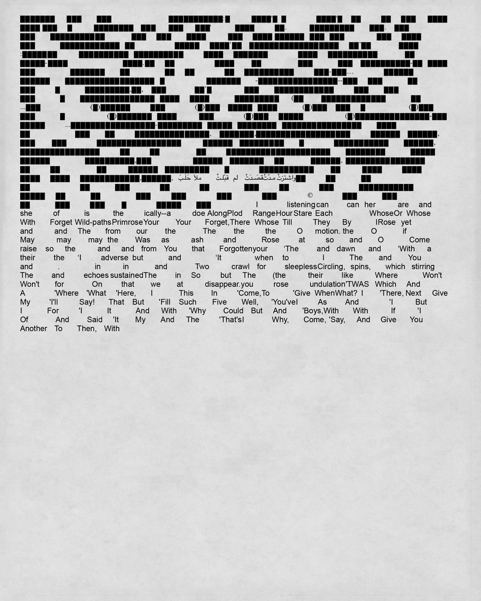
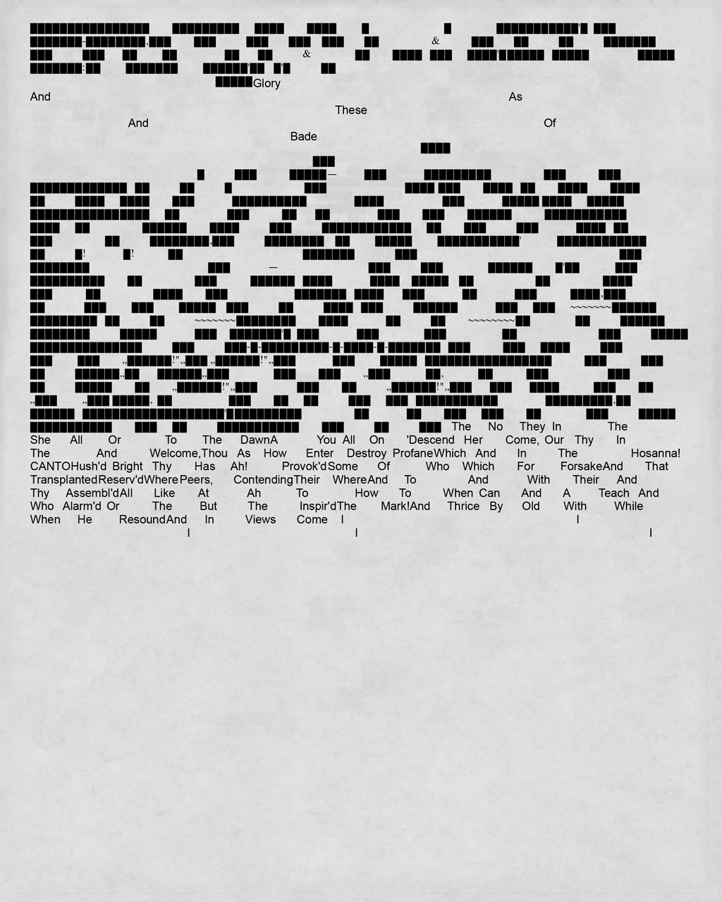
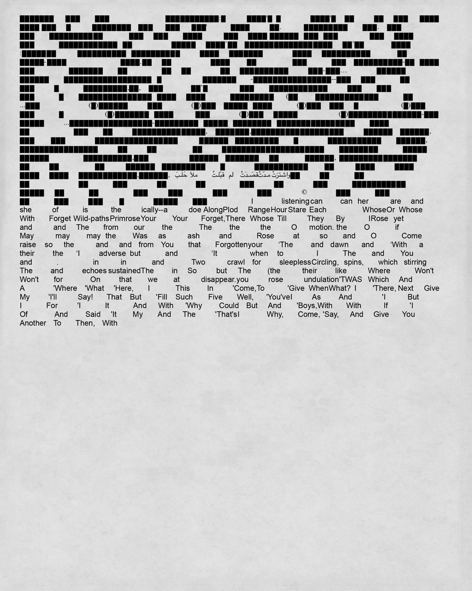
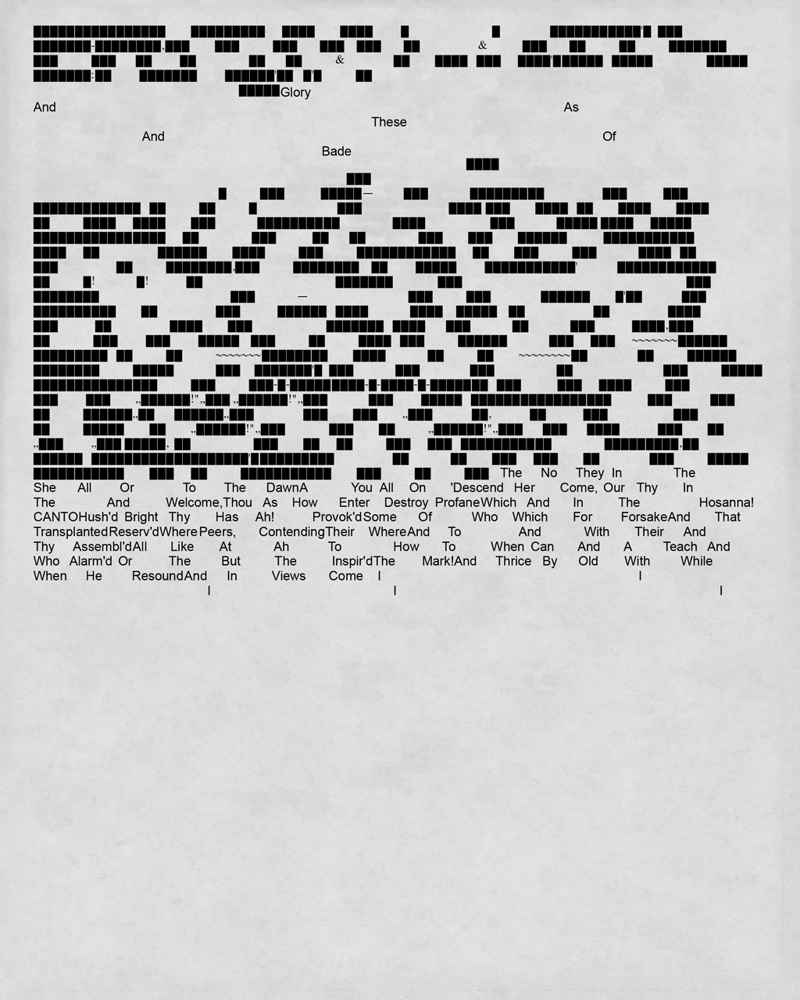

Generative? Poems
Variable Systems Website / work in progress / 2022
Originally created as the final project for Web Type course taught by Marie Otsuka, an introductory to intermediate course for HTML, CSS, JavaScript, and variable font creation.
As the final project we were tasked with developing a typographic diagram — a system — for a chosen collection of data. Where, “data” is a loose term for a collection of relational content.
Generative? Poems pulls random poems from the Poemist website via the Poemist API. It then seperates each poem according to the author's line breaks and stores each fragment of the poems in drop down menus that populate the screen.
As the viewer, you get to append more poems, change the text of the generated poem by clicking through the drop down menus, toggle how the type is rendered, print out your results, and more when I get around to adding more features.
On this page is a small collection of some generated poems I printed out. Visit the page and generate some of your own by clicking here, or on the title.